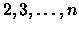
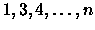
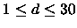
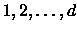

| Always on the run |
Screeching tires. Searching lights. Wailing sirens. Police cars everywhere. Trisha Quickfinger did it again! Stealing the `Mona Lisa' had been more difficult than planned, but being the world's best art thief means expecting the unexpected. So here she is, the wrapped frame tucked firmly under her arm, running to catch the northbound metro to Charles-de-Gaulle airport.
But even more important than actually stealing the painting is to shake off the police that will soon be following her. Trisha's plan is simple: for several days she will be flying from one city to another, making one flight per day. When she is reasonably sure that the police has lost her trail, she will fly to Atlanta and meet her `customer' (known only as Mr. P.) to deliver the painting.
Her plan is complicated by the fact that nowadays, even when you are stealing expensive art, you have to watch your spending budget. Trisha therefore wants to spend the least money possible on her escape flights. This is not easy, since airlines prices and flight availability vary from day to day. The price and availability of an airline connection depends on the two cities involved and the day of travel. Every pair of cities has a `flight schedule' which repeats every few days. The length of the period may be different for each pair of cities and for each direction.
Although Trisha is a good at stealing paintings, she easily gets confused when booking airline flights. This is where you come in.
Next you are given n(n - 1) flight schedules, one per line, describing the connection between every possible pair of cities. The first n - 1 flight schedules correspond to the flights from city 1 to all other cities ( ), the next n - 1 lines to those from city 2 to all others ( ), and so on.
The description of the flight schedule itself starts with an integer d, the length of the period in days, with . Following this are d non-negative integers, representing the cost of the flight between the two cities on days . A cost of 0 means that there is no flight between the two cities on that day.
So, for example, the flight schedule ``3 75 0 80'' means that on the first day the flight costs 75, on the second day there is no flight, on the third day it costs 80, and then the cycle repeats: on the fourth day the flight costs 75, there is no flight on the fifth day, etc.
The input is terminated by a scenario having n = k = 0.
If it is not possible to travel in such a way, print ``No flight possible.''.
Print a blank line after each scenario.
3 6 2 130 150 3 75 0 80 7 120 110 0 100 110 120 0 4 60 70 60 50 3 0 135 140 2 70 80 2 3 2 0 70 1 80 0 0
Scenario #1 The best flight costs 460. Scenario #2 No flight possible.